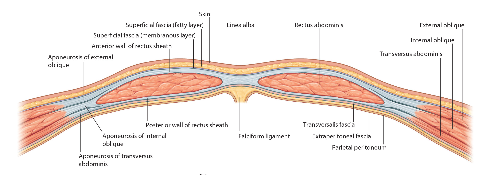
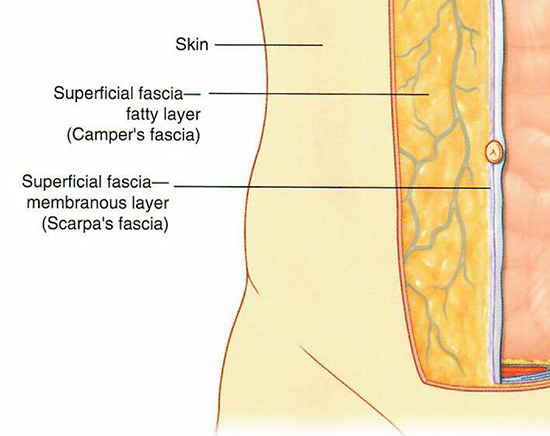
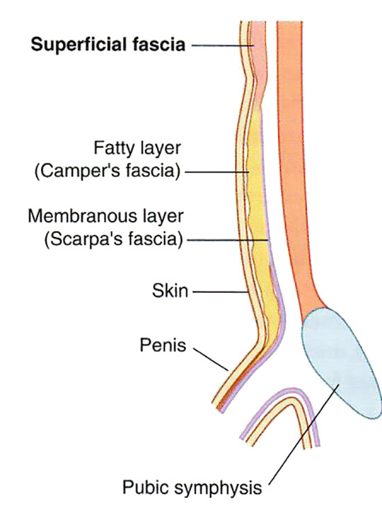

Anterior Abdominal Wall: Lab 4 - Page 3 of 6
Now that the anterior abdominal; muscles are defined, lets look at cross sections of the abdomen to define how the these muscles look in cross section.
| Add a transverse cross section plane. Use the Highlight tool to identify the components of the abdominal wall musculature in the transverse cross section window. |
|
The area between the anterior wall of the rectus sheath and the skin comprises the fatty layers of the abdomen and contain Camper's and Scarpa's fascias that are important landmarks to the surgeon during abdominal surgery. These are not well demarcated on our cadaver but will be important during your surgical rotations. Camper's fascia is a fatty layer that is filled with small vessels that must be clamped and tied or cauterized during surgery. Scarpa's fascia is a membranous layer that marks the entry into the abdominal cavity. |
  |
Assuming you are not performing laparoscopic surgery. What would be the best surgical approach to the abdomen? |
|
|
An incision following the linea alba because of the decreased vascularity of this area and the lack of muscles along the linea alba. |
|